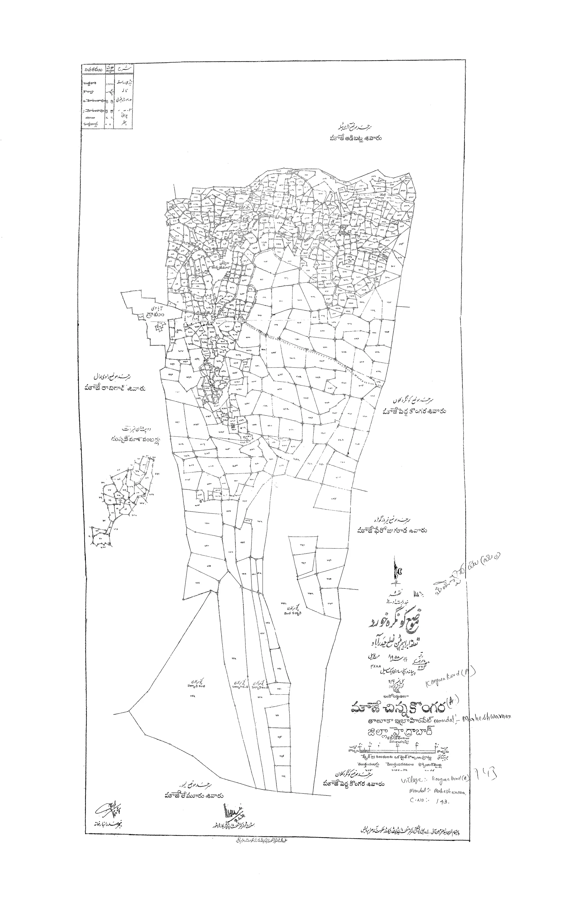
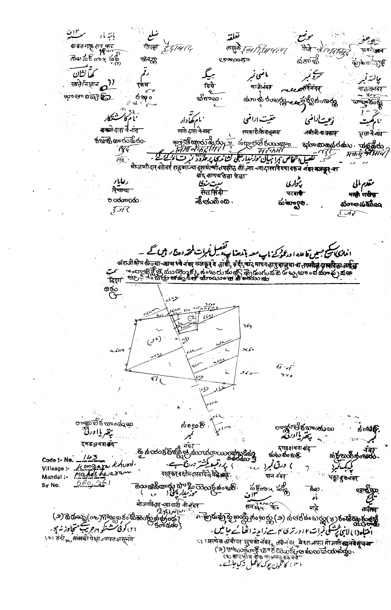
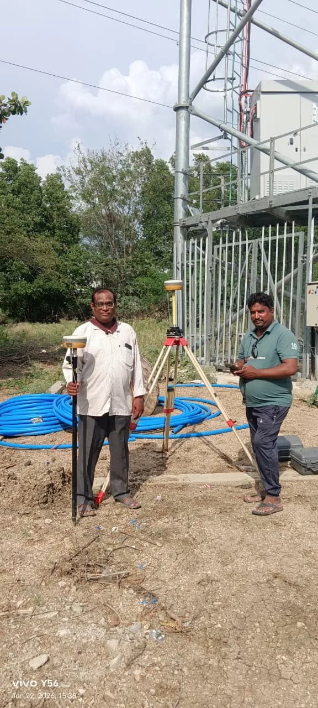

RNR CIVIL SURVEYORS · BOLLARAM
How We Work in the Field
Bollaram land partition survey
The Bollaram drawing dated 20 November 2026 shows how the land was divided into four shares. Follow the survey from the village records to the field photographs and the dimensioned partition plan.
Village survey records




Field measurements




Partition plan and share areas
| Share | Acres | Guntas |
|---|---|---|
| A | 1 | 8.39 |
| B | 0 | 27 |
| C | 1 | 0 |
| D | 0 | 27.11 |
| TOTAL AREA | 3 | 31 |
The four shares add up to 8.50 guntas less than the total shown on the drawing. The reason for this difference is pending confirmation.
Enquire about a partition survey on WhatsApp +91 81062 29816